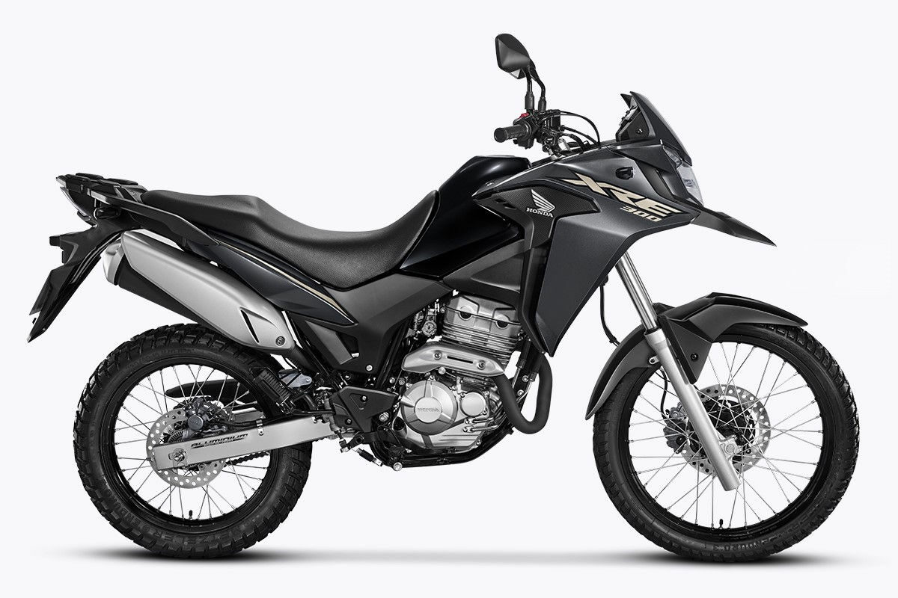

Quanto custa manter uma XRE 300 por ano?

Vale a pena manter uma XRE 300?
A Honda XRE 300 é uma das motos trail mais populares do Brasil. Ela é conhecida pela versatilidade, conforto e capacidade de enfrentar diferentes tipos de terreno.
Antes de comprar esse modelo, muitas pessoas querem saber quanto custa manter uma XRE 300 por ano. Isso é importante para entender se o custo da moto cabe no orçamento.
Os principais gastos envolvem combustível, manutenção, seguro e documentação.
Consumo de combustível
O consumo da XRE 300 pode variar dependendo do estilo de pilotagem e das condições da estrada.
Em média, a moto costuma fazer entre 25 km/l e 30 km/l.
Se um motociclista rodar cerca de 12 mil quilômetros por ano, o gasto com combustível pode ficar em torno de alguns milhares de reais dependendo do preço da gasolina.
Manutenção e revisões
A manutenção da XRE 300 inclui troca de óleo, filtros, pastilhas de freio e revisões periódicas.
Esses serviços são importantes para garantir o bom funcionamento da moto e evitar problemas mecânicos no futuro.
Em média, o custo anual de manutenção pode variar dependendo do uso da moto e da região.
Seguro e documentação
Outro gasto importante ao calcular quanto custa manter uma XRE 300 por ano é o seguro da moto.
O valor pode variar bastante dependendo da idade do condutor, cidade e histórico de direção.
Além disso, também é necessário pagar documentos obrigatórios como IPVA e licenciamento.
Custo total anual
Somando combustível, manutenção e documentação, o custo anual para manter uma XRE 300 pode variar bastante de acordo com o uso.
Para quem utiliza a moto diariamente, o valor pode ser maior. Já para quem usa apenas em passeios ou viagens ocasionais, os gastos tendem a ser menores.
Por isso, antes de comprar uma moto dessa categoria, é importante analisar todos os custos envolvidos.